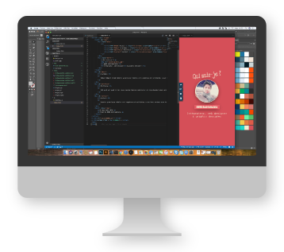

Eodem tempore etiam Hymetii praeclarae indolis viri negotium est actitatum, cuius hunc novimus esse textum. cum Africam pro consule regeret Carthaginiensibus victus inopia iam lassatis, ex horreis Romano populo destinatis frumentum dedit, pauloque postea cum provenisset segetum copia, integre sine ulla restituit mora.
Sed quid est quod in hac causa maxime homines admirentur et reprehendant meum consilium, cum ego idem antea multa decreverim, que magis ad hominis dignitatem quam ad rei publicae necessitatem pertinerent? Supplicationem quindecim dierum decrevi sententia mea. Rei publicae satis erat tot dierum quot C. Mario ; dis immortalibus non erat exigua eadem gratulatio quae ex maximis bellis. Ergo ille cumulus dierum hominis est dignitati tributus.
Hymetii praeclarae indolis viri negotium est actitatum, cuius hunc novimus esse textum. cum Africam pro consule regeret Carthaginiensibus victus inopia iam lassatis, ex horreis Romano populo destinatis frumentum dedit, pauloque postea cum provenisset segetum copia, integre sine ulla restituit mora.